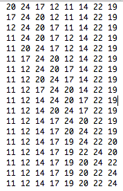
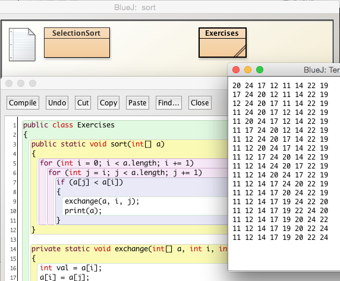
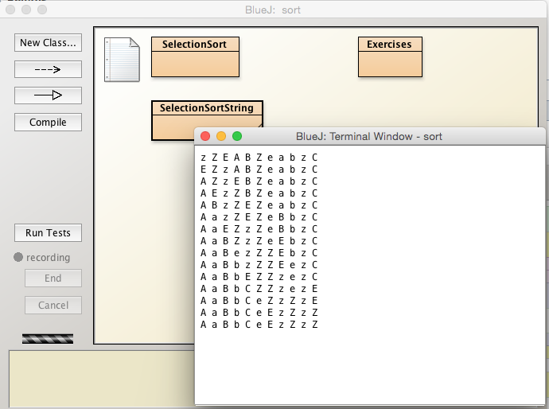
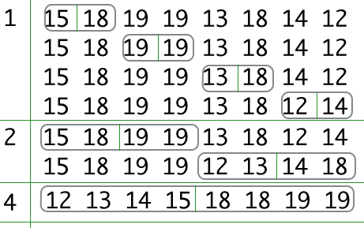

These are the solutions to the sorting and searching exercises.
Write out the varying sequence of arrays from the original unsorted to the final sorted arrangement for the following array that we have already encountered:
Unsorted: {20, 24, 17, 12, 11, 14, 22, 19}
Sorted : {11, 12, 14, 17, 19, 20, 22, 24}
For example, the first change occurs when 20 is exchanged with 11 resulting in the following array:
Partially sorted : {11, 24, 17, 12, 20, 14, 22, 19}

Use a print method or otherwise to programatically display the varying sequence of arrays from the original unsorted to the final sorted arrangement for the following array that we have already encountered:
Unsorted: {20, 24, 17, 12, 11, 14, 22, 19}
Sorted : {11, 12, 14, 17, 19, 20, 22, 24}
Copy the content of SelectionSort to a new class named Exercises.
Add a print statement to the sort method as shown in Figure 2, ensuring you provide a pair of {}:
public static void sort(int[] a)
{
for (int i = 0; i < a.length; i += 1)
for (int j = i; j < a.length; j += 1)
if (a[j] < a[i])
{
exchange(a, i, j);
print(a);
}
}
The output, which should be the same as that in Exercise 1, is also shown in Figure 2.

Write a Selection sort algorithm to sort an array of String objects.
Use the method String.compareToIgnoreCase when comparing String objects.
Test your code with this array:
String[] s = {"z", "Z", "E", "A", "B", "Z", "e", "a", "b", "z", "C"};
Add a new class named SelectionSortString to the Sorting project.
public class SelectionSortString
{
public static void sort(String[] a)
{
for (int i = 0; i < a.length; i += 1)
for (int j = i; j < a.length; j += 1)
if (a[i].compareToIgnoreCase(a[j]) > 0)
{
exchange(a, i, j);
print(a);
}
}
private static void exchange(String[] a, int i, int j)
{
String val = a[i];
a[i] = a[j];
a[j] = val;
}
public static void print(String[] a)
{
for (String val : a)
System.out.print(val + " ");
System.out.println();
}
public static void test()
{
String[] s = {"z", "Z", "E", "A", "B", "Z", "e", "a", "b", "z", "C"};
print(s);
sort(s);
print(s);
}
}
The output on invoking test() is shown in Figure 3:

Manually use the Merge sort algorithm to sort the following array:
{18, 15, 19, 19, 13, 18, 14, 12}
Write out the array as it would exist following each call to the merge method.
15 18 19 19 13 18 14 12
Identify the blocks being merged at each invocation of merge.
The solution comprises 7 sets of arrays including the original unsorted and the final sorted versions.
Solution shown here in Figure 1:

5.1 Write two versions of a binary search algorithm to sort an array of strings:
5.2 Test the algorithms:
Here is the string to be searched for and the array of strings, the search space:
String sought = "able";
String[] target = {"Able", "was", "I", "ere", "I", "saw", "Elba", "How original!"};
/**
* Search a list of strings stored as an array for a particular string
* @param a The sorted array of strings - the search space.
* @param sought The string being searched for.
* @return The position index of the string being sought if it exists. If it does not exist -1 is returned.
*/
public static int binarySearch(String[] a, String sought)
{
int lo = 0;
int hi = a.length - 1;
int mid;
while (lo <= hi)
{
mid = (lo + hi) / 2;
if (compareTo(sought, a[mid]) < 0)
hi = mid - 1;
else if (compareTo(sought, a[mid]) > 0)
lo = mid + 1;
else // sought == a[mid]: found match
return mid;
}
return -1; //failed to find sought match
}
private static int compareTo(String s1, String s2)
{
return s1.compareTo(s2);
}
/**
* Search a list of strings stored as an array for a particular string
* @param a The sorted array of strings - the search space.
* @param sought The string being searched for.
* @return The position index of the string being sought if it exists. If it does not exist -1 is returned.
*/
public static int binarySearchIgnoreCase(String[] a, String sought)
{
int lo = 0;
int hi = a.length - 1;
int mid;
while (lo <= hi)
{
mid = (lo + hi) / 2;
if (compareToIgnoreCase(sought, a[mid]) < 0)
hi = mid - 1;
else if (compareToIgnoreCase(sought, a[mid]) > 0)
lo = mid + 1;
else // sought == a[mid]: found match
return mid;
}
return -1; //failed to find sought match
}
private static int compareToIgnoreCase(String s1, String s2)
{
return s1.compareToIgnoreCase(s2);
}
Test method:
public static void test()
{
String sought = "able";
String[] target = {"Able", "was", "I", "ere", "I", "saw", "Elba", "How original!"};
SelectionSort_String.sort(target);
int x = binarySearch(target, sought);
String response = x != -1 ? "found" : "not found";
System.out.println("Value " + searchFor + " " + response);
x = binarySearchIgnoreCase(target, sought);
response = x != -1 ? "found" : "not found";
System.out.println("Value " + searchFor + " " + response);
}